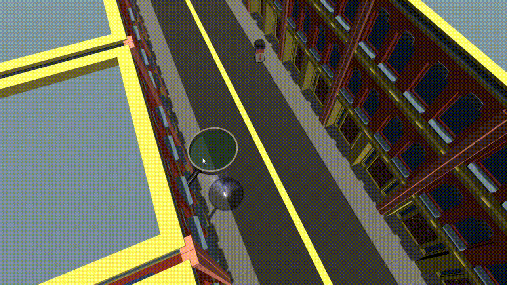
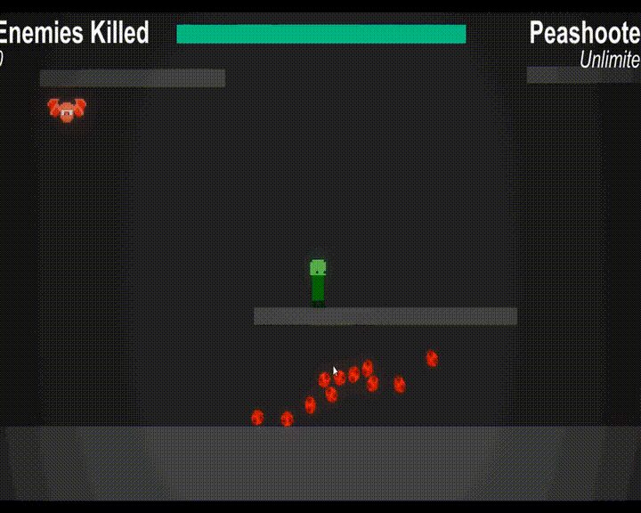

Human Ants
A recreation of an old Flash game in 3D, where you burn people and objects in a city like a child with a magnifying glass might do to an ant colony.
Languages/Technologies used
- Blender
- C#
- Unity
links:
GitHubFractal Generator

2D fractal generator which uses L-systems and turtle string interpretation to create the fractals.
Languages/Technologies used
- C#
- Unity
links:
GitHubRootin Tootin Kapo Shootin
2D sidescrolling shooter made with a team for a Hackathon with the theme 'Infinite Power'. You start out weak, you can pick up an infinite number of powerups that stack on top of each other, eventually granting you infinite power.
Languages/Technologies used
- C#
- Unity
links:
itch.io